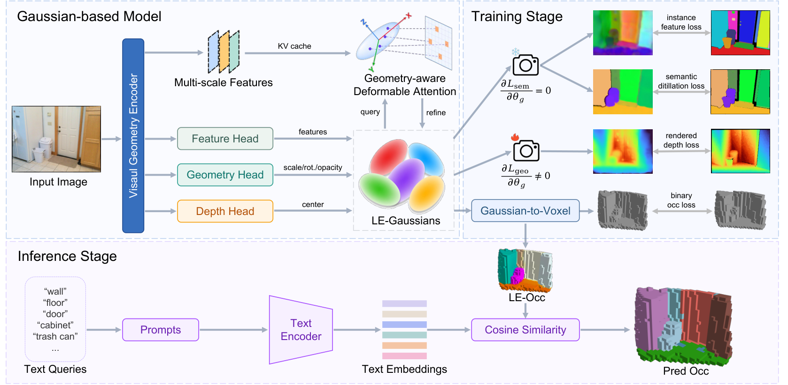

Paper Analysis
01 · Problem Setting
OVM-Occ 研究的是单张 RGB 图像的开放词汇 occupancy：输入图像，输出带语义查询能力的三维占据场。训练只使用二值 occupancy 和深度，不使用逐体素语义真值；类别在推理时由文本查询指定。它与 LingBot-Map 的差别很重要：前者是单帧预测，后者需要连续帧、位姿和有限历史。
作者选择 Language-Embedded Gaussian 作为中间状态，使几何和语言特征共享同一组三维 primitive。这样语义结果不是单独贴在网格上的标签，而是可随高斯渲染、聚合和查询一起传播。
Mechanism
02 · Language-Embedded Gaussians
每个高斯由 G={μ,s,r,α,f} 参数化，其中 μ、s、r、α 分别表示中心、尺度、旋转和 opacity，f 是 language-aligned feature。网络先由预测深度得到表面高斯，再沿相机射线按 Δ_n 采样形成体高斯：μ_n(p)=(D̂(p)+Δ_n(p))d(p)。训练时把它们渲染到图像平面，同时聚合到 voxel occupancy。
语义特征还经过 geometry-aware deformable attention：沿高斯局部主轴放置固定采样点，并加入可学习采样点；采样位置由尺度和旋转变换后投影到图像，再由深度差和特征相似度预测权重。这一步让语义特征聚合知道高斯的局部几何，而不是只做二维平均。
μ_n(p)=(D̂(p)+Δ_n(p))d(p); u_j=π(μ+R diag(s) ε_j)
Mechanism
03 · Instance-Aware Vision-Language Teacher
教师由三条证据组成：LVLM 从图像提取类别，文本编码器把类别变成语言锚点，开放词汇实例分割模型给出 mask；同时 CLIP 视觉编码器提取像素级视觉特征。对每个实例 mask 做 masked average pooling 得到视觉向量，再与对应文本向量按权重融合。
这样文本提供类别语义，视觉分支提供实例外观，mask 则约束边界。作者用 Qwen2.5-VL-3B、SAM 3 和 OpenSeg 构造教师；教师只在训练时生成监督，学生部署时只需运行轻量 backbone 和高斯头。
v_i=Σ_p M_i(p)F(p)/Σ_p M_i(p); ẽ_i=λ_vis v_i+(1−λ_vis)t̂_i
Training
04 · Geometry-Aware Decoupled Distillation
语义蒸馏有两个容易出问题的反馈路径。若语义 loss 的梯度直接进入 μ、s、r、α，模型可能通过移动高斯来降低 feature loss，而不是学习更好的语义；若深度估计错位，投影高斯与教师像素本来就不对应。作者因此令 ∂L_sem/∂θ_g=0，并用 M^d=I(|D̂−D_gt|<τ_d) 过滤几何不可靠像素。
这不是说语义和几何完全独立，而是让几何监督先确定可靠的投影，语义分支在这些位置学习对齐。对 LingBot-Map，类似的做法是：语义 loss 直接更新融合器/语义状态，但第一版阻断它对相机和几何参数的捷径梯度；随后再用单独消融测试是否允许有限的语义 guidance。
∂L_sem/∂θ_g=0; M^d=I(|D̂−D_gt|<τ_d)
Training
05 · Objective and Inference

Shuyang Yu et al. · Original figure, unmodified · arXiv perpetual non-exclusive license · Paper & Caption ↗
总损失由 occupancy binary focal、Lovász、深度 Huber、置信度加权的 cosine semantic distillation 和 instance contrastive loss 组成：L=λ1Lfocal+λ2Llov+λ3Ldepth+λ4Lsem+λ5Lins。语义项只在实例 mask 与深度可靠区域求平均，减少背景和错位像素的影响。
推理时，LE-Gaussians 被聚合为 Language-Embedded Occupancy；任意文本类别可与高斯语言特征做相似度查询，再投影成语义 occupancy 或 BEV。论文的方法是前馈单目推断，不维护跨帧 memory，因此不能直接作为 LingBot-Map 的 online 模块。
L_sem=Σ_i,p s_i M_i(p)M^d(p)[1−cos(f(p),e_i)] / Σ_i,p s_i M_i(p)M^d(p)
Evidence
06 · Experimental Evidence
Occ-ScanNet 上 OVM-Occ 达到 IoU 60.10、mIoU 33.25，相比 LegoOcc 的 59.50/21.05 提升 0.60/12.20。OpenOcc-ScanNet40 上 mIoU 为 21.79，对 LegoOcc 的 12.93；OpenOcc-Replica35 预训练后用 100 帧微调时 mIoU 14.44，使用 1.1K 帧时达到 23.28。
消融表明 instance-aware VL teacher 在 LegoOcc 和本文学生框架中都带来超过 8 个 mIoU 点的提升；在同一教师下，本文框架相对 LegoOcc 再提升 3.49–3.75。作者将收益归因于实例边界、语言锚点和视觉外观的互补，但这些数字仍是在 occupancy benchmark 上，不能等价为流式地图长期一致性。
Transfer Analysis
07 · Transfer to LingBot-Map
对 LingBot-Map 最有用的不是照搬单目 occupancy head，而是三点：把语言特征作为与几何绑定的历史字段；让语义监督只在几何可信区域生效；使用 instance-aware teacher 而非整图 CLIP 平均。这样可以把“什么对象/区域值得保留”与“这个几何证据是否可靠”放进同一个写入门。
仍需保持严格对照：同一 memory budget 下比较无语义、只在输出端蒸馏、写入前融合三组；报告后续帧深度/点图、位姿、边界完整度、语义查询和速度。OVM-Occ 的几何-语义解耦为我们提供一个安全起点，但语义是否改善流式几何只能由这些实验决定。
Discussion
Reading Questions
question
answer
question
answer
question
answer
References
Figure 2 is reproduced from the authors' arXiv HTML page for scholarly explanation; the paper carries arXiv's perpetual non-exclusive license.
Verified on 2026-11-07. Paper results refer to the linked versions. Repository references were checked on this date.